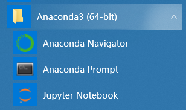
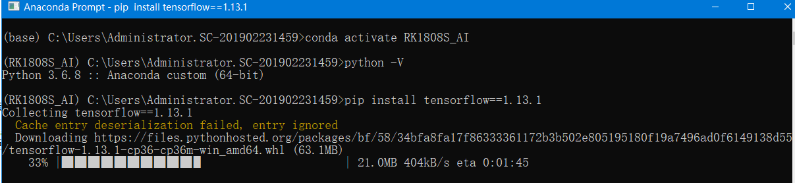
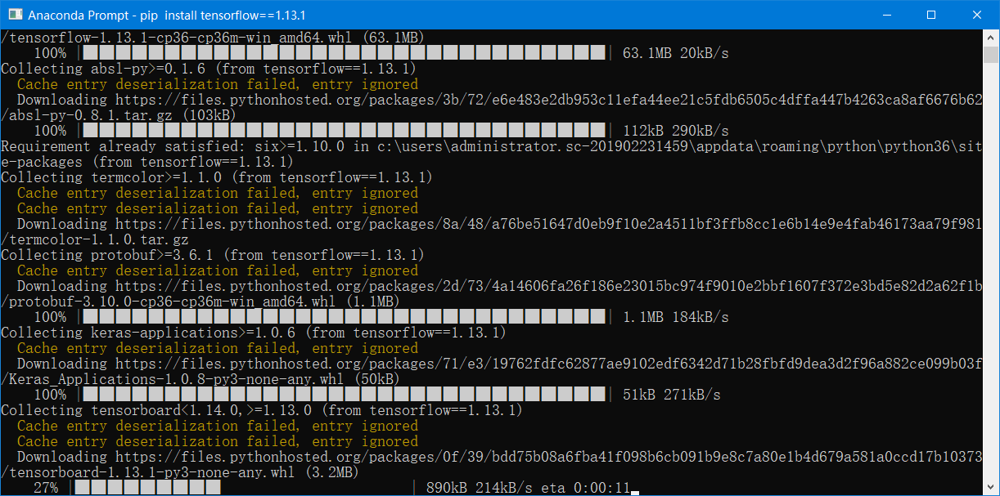
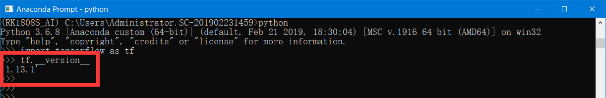
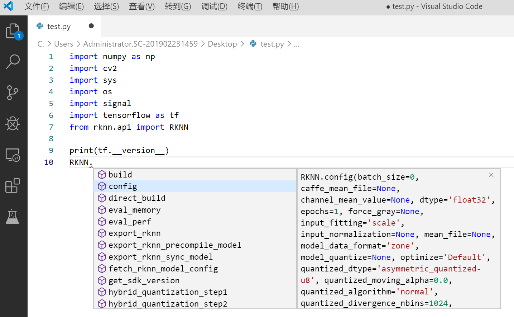

RK1808S_AI计算棒—搭建Windows开发环境
0、引言
本文将实现 Anaconda3+TensorFlow(1.15)+Python3.6+RKNN(计算棒专用接口)+VSCode+OpenCV-Python
在Windows下面实现的可断点仿真环境搭建
主机：Windows10
VS Code版本
版本: 1.39.1 (user setup) 提交: 88f15d17dca836346e787762685a40bb5cce75a8 日期: 2019-10-10T23:31:28.683Z Electron: 4.2.10 Chrome: 69.0.3497.128 Node.js: 10.11.0 V8: 6.9.427.31-electron.0 OS: Windows_NT x64 10.0.17134 VS Code插件：python （在扩展里面添加即可）
1、安装虚拟环境Anaconda3
1.1、下载安装
1.2、下载完成
完装完成后，可以在开始菜单看到：

1.3、创建专用虚拟环境
运行Anaconda Prompt：点击图标Anaconda Prompt即可进入Anaconda命令行环境：

此时，输入以下指令，可以开始国内镜像源是采用的清华大学开源软件镜像站:
conda config --add channels https://mirrors.tuna.tsinghua.edu.cn/anaconda/pkgs/free/
conda config --set show_channel_urls yes
此时，输入以下指令，可以开始创建我们专用的虚拟环境：
conda create -n RK1808S_AI python=3.6.8 anaconda
按提示输入：y即可：

之后，便开始安装或者下载相应的包：

环境创建成功之后，就会出现如下图所示：

同时，开始菜单就会出现如下图所示：

2、安装TensorFlow
-
因为不是所有的电脑都是N卡，也不一定支持CUDA，所以我们选择安装TensorFlow CPU版本的，通用性更广一些。
-
激活步骤1中的虚拟环境，在
Anaconda Prompt输入：activate RK1808S_AI即可启动步骤1中的环境；如果输入deactivate即出当前环境。方法二，可以在开始菜单中点击Anaconda Prompt(RK1808S_AI)，即可进入相应的环境。 -
将pip源改为清华大学源
pip install pip -U
pip config set global.index-url https://pypi.tuna.tsinghua.edu.cn/simple
- 如果您到 pip 默认源的网络连接较差，临时使用本镜像站来升级 pip：
pip install -i https://pypi.tuna.tsinghua.edu.cn/simple pip -U
此时，输入以下指令，可以在线安装TensorFlow:
pip install tensorflow==1.13.1


- 安装完成：

3、安装OpenCV-Python
pip install opencv-python

4、安装RKNN(AI计算棒的py接口)
- 切换到RKNN的whl包目录，手动执行安装即可，具体目录以你自己的为准：
pip install lmdb-0.95-cp36-cp36m-win_amd64.whl
pip install rknn_toolkit-1.2.0-cp36-cp36m-win_amd64.whl
先安装lmdb-0.95-cp36-cp36m-win_amd64.whl,再安装rknn_toolkit-1.2.0-cp36-cp36m-win_amd64.whl;其中安装lmdb就很快完成，但rknn需要依赖很多依赖项，安装比较慢，如下图：

完装完成，效果如下：

5、安装VSCode
-
VSCode的安装就不再累述了，官网下载，三个操作系统支持
-
需要强调的是：VScode安装成功后，需要安装一些插件，此文必需有：python、中文语言包
6、VSCode使用集成化环境
- 打开VSCode并新增一个py文件，同时选择前文搭建好的版本即可：

- 书写相关代码时可以看到相应的接口提示：


进入单步调试界面，点击界面上的“调试”->“启动调试”或者快捷F5即可，一键即可进入调试环境：